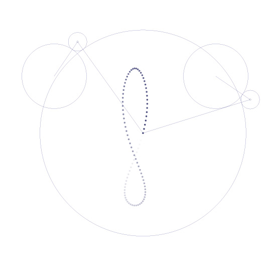

Posted by Mark M on Jan 11, 2009
It looks like an apostrophe in one of the comments messed up the syntax coloring here. Sorry about that--the code should run fine with a copy and paste regardless.
Posted by lievn on Jan 11, 2009
i removed the apostrophe leaving a spelling error..
a dilemma.

Analemma
Posted by Mark M on Jan 11, 2009
A little weekend diversion…drawing and analemma the hard way. Changing the radii of the circles changes the drawn shape in interesting ways.